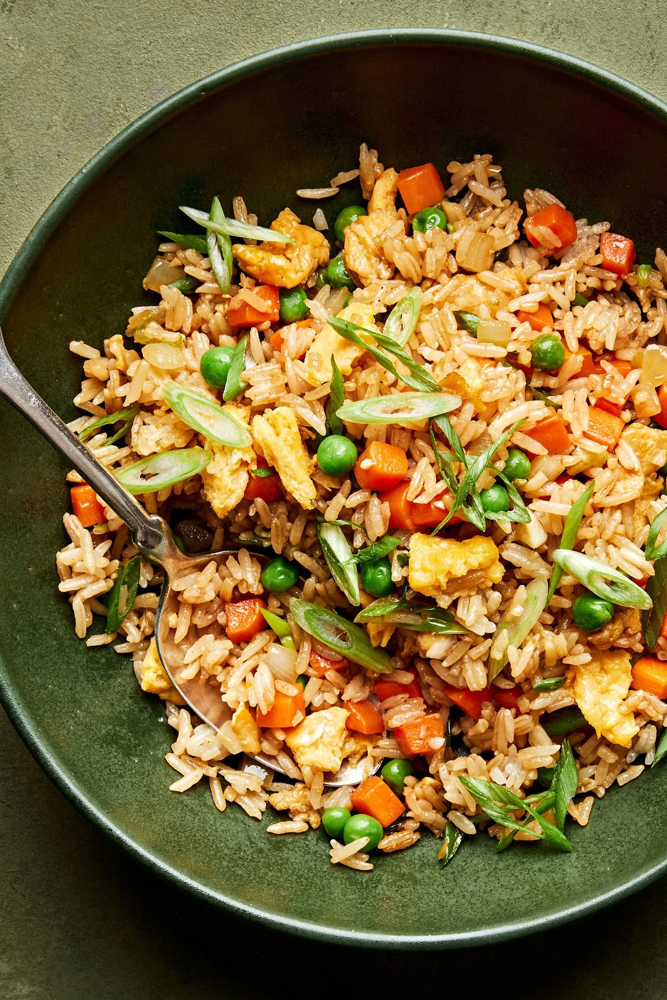

Homemade Fried Rice

The Very Best Fried Rice Recipe
Seasoned simply with coconut aminos, toasted sesame oil and a bit of soy sauce, our veggie-loaded fried rice is proof that the simplest recipes are always the biggest hits.
With this recipe, though, we’ve finally perfected a homemade riff on the simplest, most classic Chinese restaurant fried rice. We’ll walk you through all the tips and tricks you need to make the very best fried rice your family has ever tasted.
Ingredients
- 4 cups cooked white rice
- 3 large eggs, beaten
- ¼ teaspoon sea salt, plus more to taste
- 2½ teaspoons toasted sesame oil
- ⅓ cup coconut aminos
- 3 tablespoons vegetable oil
- 2 medium carrots, finely diced (about 1 cup)
- 1 small yellow onion, finely chopped (about 1 cup)
- 3 cloves garlic, minced
- ¾ cup frozen peas, thawed
- 4 green onions, chopped
- 2 tablespoons soy sauce
Steps
- In a small bowl, combine eggs, salt, ½ teaspoon of the sesame oil, and ½ teaspoon of the coconut aminos, whisking with a fork until smooth.
- Heat 1 tablespoon of the vegetable oil and 1 teaspoon of the remaining sesame oil in a large skillet or wok over medium-high heat. Once the oil is glistening, add the carrots and cook until slightly softened, 3 to 4 minutes. Add the onion and cook for another 4 minutes, or until onion and carrots are both tender. Stir in the garlic and cook until fragrant, about 1 minute more. Transfer the vegetables to a large bowl.
- Add 1 tablespoon of the remaining vegetable oil to the skillet. Add the egg mixture and cook, scrambling, until set, about 1 minute. Immediately transfer to the bowl with the veggies.
- In the same skillet, heat the remaining 1 tablespoon of vegetable oil and the remaining 1 teaspoon of sesame oil. Once the oil is glistening, add the rice and toss to coat. Spread the rice evenly on the bottom of the pan. Cook, undisturbed, until the rice begins to crisp on the bottom, 2 to 3 minutes. Stir the rice once, then continue to cook, undisturbed, until slightly crispy, another 2 to 3 minutes.
- Return the veggies and eggs to the skillet. Add the peas, green onions, remaining coconut aminos, and soy sauce. Cook, stirring, to combine and warm through, 1 to 2 minutes. Taste and season with salt.